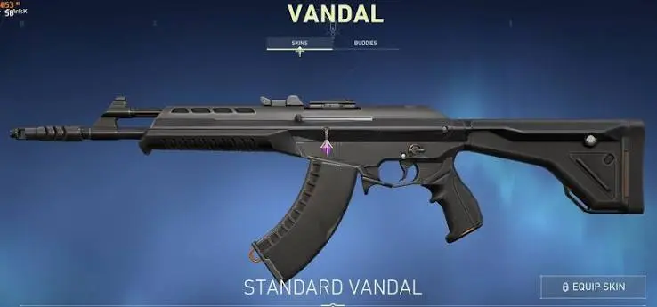
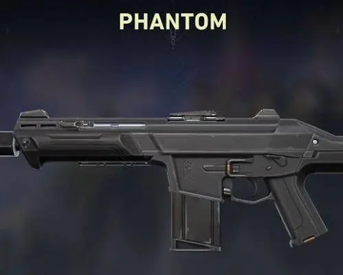
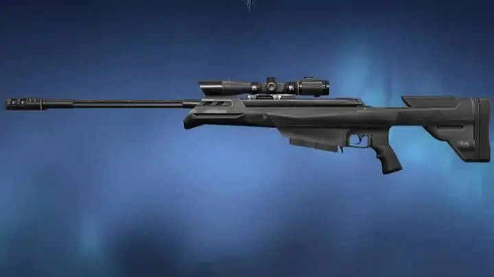
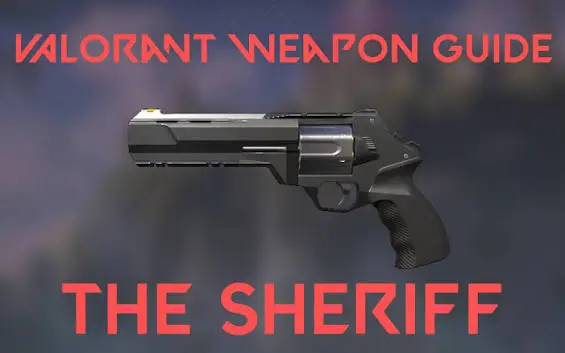

Arsenal Senjata
Panduan lengkap senjata di Valorant beserta statistik dan penggunaannya
Senjata Populer

Vandal
Senjata yang paling sering terlihat di ranked. One-tap headshot tetap sakit di jarak jauh, makanya banyak Duelist yang mengandalkan Vandal.

Phantom
Alternatif Vandal yang punya silencer dan fire rate lebih cepat. Buat yang suka spray control daripada one-tap, Phantom lebih nyaman dipakai.

Operator
Senjata sniper yang bikin lawan segan. Sekali kena body langsung mati. Cocok buat sentinel yang main sabar dan suka jaga angle.

Sheriff
Pistol terkuat di Valorant. One-tap headshot di jarak dekat-menengah masih bisa diandalkan, jadi pilihan eco round yang patut dipertimbangkan.
Tabel Perbandingan Senjata
| Senjata | Kategori | Harga | Damage (HS) | Fire Rate | Best For |
|---|---|---|---|---|---|
| Vandal | Rifle | 2900 | 160 | 9.75/s | One-tap, all range |
| Phantom | Rifle | 2900 | 156 | 11/s | Spray, close-mid range |
| Operator | Sniper | 4700 | 255 | 0.75/s | Long range, holding angle |
| Sheriff | Pistol | 800 | 159 | 4/s | Eco round, one-tap |
| Spectre | SMG | 1600 | 78 | 13.33/s | Anti-eco, close range |
| Guardian | Rifle | 2250 | 195 | 5.25/s | Precision, mid-long range |
| Marshal | Sniper | 950 | 202 | 1.5/s | Budget sniper, eco |
| Classic | Pistol | Free | 78 | 6.75/s | Pistol round, backup |
Tips Memilih Senjata
Vandal vs Phantom?
Pilih Vandal jika suka tap-tap dan bermain di jarak jauh. Pilih Phantom jika lebih suka spray dan sering fight di jarak dekat-menengah.
Kapan Beli Operator?
Beli Operator saat tim unggul economy dan kamu bermain agent yang bisa hold angle seperti Jett atau Chamber.
Eco Round Strategy
Saat eco round, beli Sheriff atau Spectre saja. Jangan force buy rifle, lebih baik simpan uang untuk full buy di ronde berikutnya.